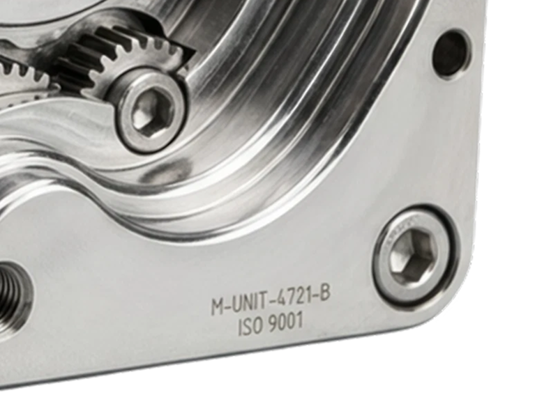
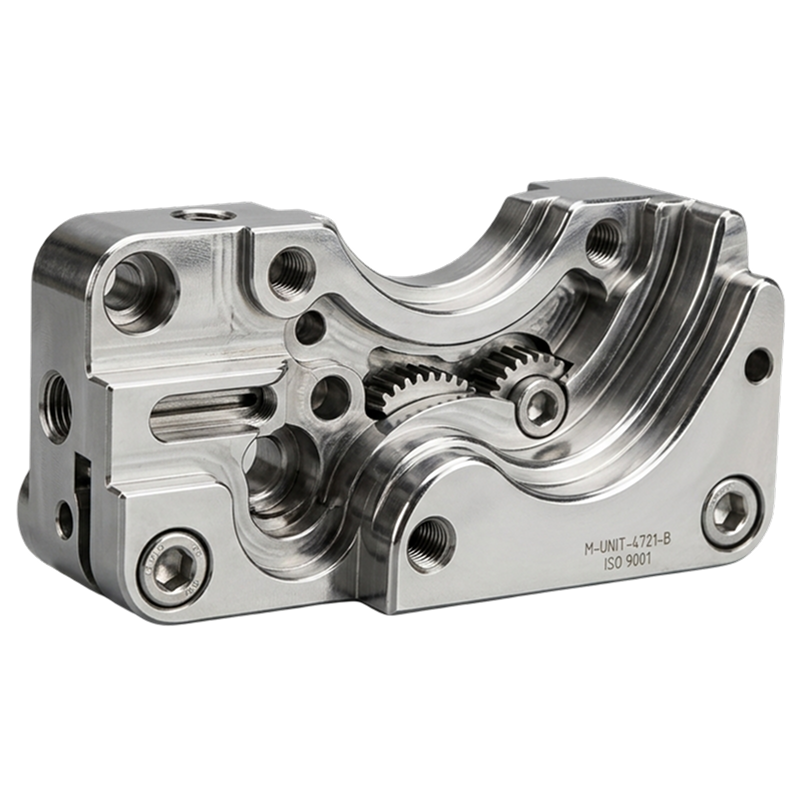
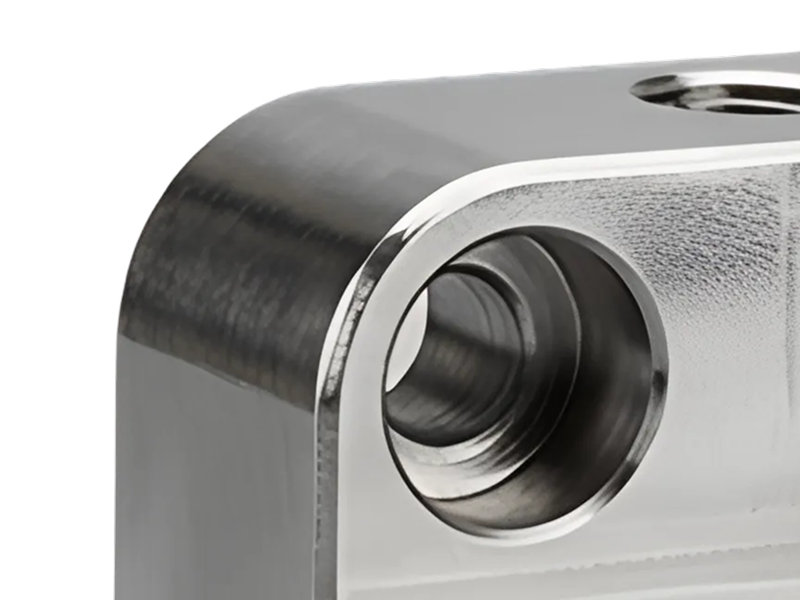
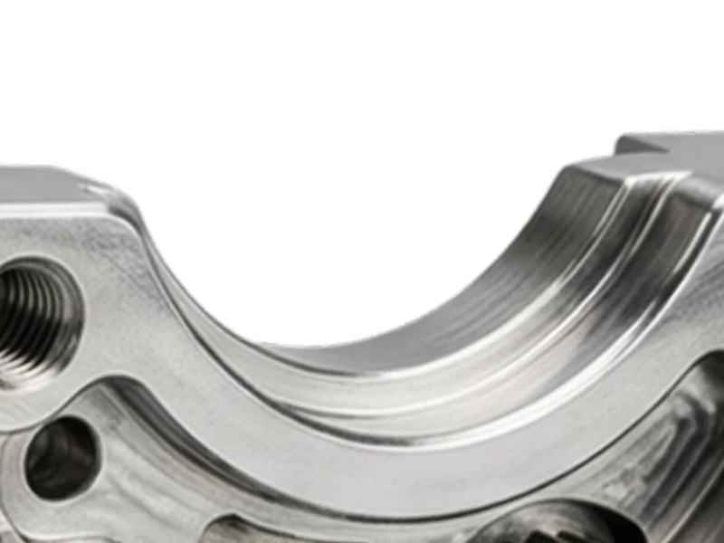

고정밀 CNC 가공 부품
±0.01mm 공차의 정밀 절삭 가공으로 자동차·반도체 설비용 부품을 소량부터 양산까지 대응합니다.


고정밀 CNC 가공 부품
±0.01mm 공차의 정밀 절삭 가공으로 자동차·반도체 설비용 부품을 소량부터 양산까지 대응합니다.

산업용 로봇 그리퍼
다품종 라인 교체에도 재조정 없이 바로 투입되는 모듈형 그리퍼로 가동 손실 시간을 줄입니다.

스마트 센서 모듈
진동·온도·전류를 동시에 측정하는 통합 센서로 설비 이상을 예지보전 단계에서 잡아냅니다.
검증된 엔지니어가직접 설계
20년 이상 현장 자동화를 다뤄온 팀이 설계한 아키텍처로, 라인 정지 없이 단계적으로 도입할 수 있습니다. 설비 제조사마다 다른 통신 규격도 표준 어댑터로 흡수해, 기존 설비를 교체하지 않고도 데이터 레이어를 새로 얹을 수 있습니다.
현장 우위의원시 데이터
PLC부터 진동·온도 센서까지 초 단위 원시 데이터를 손실 없이 수집하고 표준 스키마로 정규화합니다. 가공하지 않은 원본 신호를 그대로 보관하기 때문에, 나중에 새로운 지표가 필요해져도 과거 데이터를 다시 뽑아 재계산할 수 있습니다.
실시간명확성에 집중
복잡한 리포트 대신 지금 무엇을 조치해야 하는지 보여줍니다. 알림은 담당자와 교대조 단위로 전달되며, 우선순위가 높은 이상 신호는 별도 확인 없이도 바로 상단에 노출되도록 정렬됩니다.
최고의 파트너와함께 협력
주요 산업 자동화 설비사, 클라우드 인프라 파트너와 공동으로 검증된 연동 규격을 운영합니다. 신규 파트너십도 같은 규격을 기준으로 검증하기 때문에, 확장할 때마다 별도 연동 작업을 처음부터 다시 하지 않아도 됩니다.
제조업의 디지털 전환은 이 시대 가장 확실한 투자 기회입니다. 데이터로 연결된 공장이 산업의 표준 인프라가 되는 흐름은, 이제 막 시작됐습니다.
제조 현장의 설비·품질·생산 데이터를 실시간으로 통합해 운영 의사결정을 돕는 산업 데이터 플랫폼입니다.
PLC, MES, ERP, IoT 센서 등 대부분의 표준 산업 프로토콜(OPC-UA, Modbus 등)을 지원합니다.
MES가 공정을 기록한다면 FORMAX는 그 기록을 실시간 판단으로 바꿉니다. 교체가 아니라 위에 얹는 레이어입니다.
표준 연동 기준 평균 4~6주 내 파일럿 라인 적용이 가능합니다.
도입 전 3개월 실적을 기준선으로 잡고, 라인·품목·교대조 단위로 개선 폭을 분리해 리포트합니다.
망분리 환경을 지원하며 온프레미스·프라이빗 클라우드 배포를 모두 제공합니다.
라인 수 기준 구독형 과금이며, 파일럿 이후 단계적 확장 계약을 지원합니다.